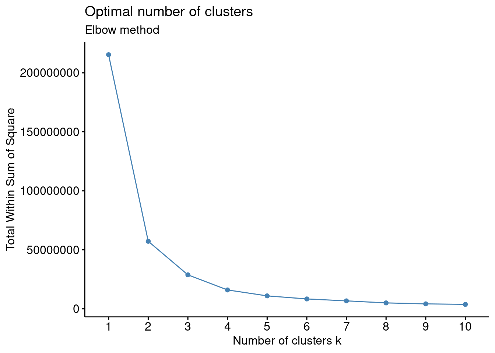

Principal Component Analysis (PCA)
Reduction of dimensions is needed when there are far too many features in a dataset, making it hard to distinguish between the important ones that are relevant to the output and the redundant or not-so important ones. Reducing the dimensions of data is called dimensionality reduction.
So the aim is to find the best low-dimensional representation of the variation in a multivariate (lots and lots of variables) data set, but how do we do this?
PCA is a member of a family of techniques for dimension reduction (ordination).
The word ordination was applied to dimension reduction techniques by botanical ecologists whose aim was to identify gradients in species composition in the field. For this reason they wanted to reduce the quadrat × species (observations × variables) data matrix to a single ordering (hence ordination) of the quadrats which they hoped would reflect the underlying ecological gradient.
One way is termed Principal Component Analysis (PCA). PCA is a feature extraction method that reduces the dimensionality of the data (number of variables) by creating new uncorrelated variables while minimizing loss of information on the original variables. It is a technique for the analysis of an unstructured sample of multivariate data. Its aim is to display the relative positions of the observations in the data cloud in fewer dimensions (while losing as little information as possible) and to help give insight into the way the observations vary. It is not a hypothesis testing technique (like t-test or Analysis of Variance); it is an exploratory, hypothesis generating tool that describes patterns of variation, and suggests relationships that should be investigated further.
Think of a baguette. The baguette pictured here represents two data dimensions: 1) the length of the bread and 2) the height of the bread (we’ll ignore depth of bread for now). Think of the baguette as your data; when we carry out PCA we’re rotating our original axes (x- and y-coordinates) to capture as much of the variation in our data as possible. This results in new uncorrelated variables that each explain a % of variation in our data; the procedure is designed so that the first new variable (PC1) explains the most, the second (PC2) the second most and so on.

Now rather than a baguette think of data; the baguette above represent the shape of the scatter between the two variables plotted below. The rotating grey axes represent the PCA procedure, essentially searching for the best rotation of the original axes to represent the variation in the data as best it can. Mathematically the Euclidean distance (e.g., the distance between points \(p\) and \(q\) in Euclidean space, \(\sqrt{(p-q)^2}\)) between the points and the rotating axes is being minimized (i.e., the shortest possible across all points), see the blue lines. Once this distance is minimized across all points we “settle” on our new axes (the black tiled axes).

Luckily we can do this all in R!
One problem with PCA is that the components are not scale invariant. That means if we change the units in which our variables are expressed, we change the components; and not in any simple way either. So, every scaling or adjustment of the variables in preparation for the analysis could (and usually does ) produce a separate component structure. It is therefore important to choose a standardisation or transformation carefully: PCA will give different results depending on whether we analyse the covariance matrix, where the data have merely been centred (corrected for the column, variable, mean), or the correlation matrix, where the data have been standardised to z -scores (centred and converted into standard deviation units). This is particularly important, as many computer programs to do PCA automatically analyse the correlation matrix . If you do not want that standardisation; you may have to explicitly ask for the covariance matrix. As you would expect, the results from the two analyses will usually be very different, see below.
Examples in R
The palmerpenguins data
When carrying out PCA we’re only interested in numeric variables, so let’s just plot those. We can use the piping operator %>% to do this with out creating a new data frame
library(GGally)
penguins_nafree %>%
dplyr::select(species, where(is.numeric)) %>%
ggpairs(aes(color = species),
columns = c("flipper_length_mm", "body_mass_g",
"bill_length_mm", "bill_depth_mm")) Using prcomp()
There are three basic types of information we obtain from Principal Component Analysis:
PC scores: the coordinates of our samples on the new PC axis: the new uncorrelated variables (stored in
pca$x)Eigenvalues: (see above) represent the variance explained by each PC; we can use these to calculate the proportion of variance in the original data that each axis explains
Variable loadings (eigenvectors): these reflect the weight that each variable has on a particular PC and can be thought of as the correlation between the PC and the original variable
Before we carry out PCA we should scale out data. WHY?
pca <- penguins_nafree %>%
dplyr::select(where(is.numeric), -year) %>% ## year makes no sense here so we remove it and keep the other numeric variables
scale() %>% ## scale the variables
prcomp()
## print out a summary
summary(pca)
## Importance of components:
## PC1 PC2 PC3 PC4
## Standard deviation 1.6569 0.8821 0.60716 0.32846
## Proportion of Variance 0.6863 0.1945 0.09216 0.02697
## Cumulative Proportion 0.6863 0.8809 0.97303 1.00000This output tells us that we obtain 4 principal components, which are called PC1 PC2, PC3, and PC4 (this is as expected because we used the 4 original numeric variables!). Each of these PCs explains a percentage of the total variation (Proportion of Variance) in the dataset:
PC1explains \(\sim\) 68% of the total variance, which means that just over half of the information in the dataset (5 variables) can be encapsulated by just that one Principal Component.PC2explains \(\sim\) 19% of the variance.PC3explains \(\sim\) 9% of the variance.PC4explains \(\sim\) 2% of the variance.
From the Cumulative Proportion row we see that by knowing the position of a sample in relation to just PC1 and PC2 we can get a pretty accurate view on where it stands in relation to other samples, as just PC1 and PC2 explain 88% of the variance.
The loadings (relationship) between the initial variables and the principal components are stored in pca$rotation:
pca$rotation
## PC1 PC2 PC3 PC4
## bill_length_mm 0.4537532 -0.60019490 -0.6424951 0.1451695
## bill_depth_mm -0.3990472 -0.79616951 0.4258004 -0.1599044
## flipper_length_mm 0.5768250 -0.00578817 0.2360952 -0.7819837
## body_mass_g 0.5496747 -0.07646366 0.5917374 0.5846861Here we can see that bill_length_mm has a strong positive relationship with PC1, whereas bill_depth_mm has a strong negative relationship. Both fliper_length_mm and body_mass_g also have a strong positive relationship with PC1.
Plotting this we get
The new variables (PCs) are stored in pca$x, lets plot some of them alongside the loadings using a biplot. For PC1 vs PC2:
library(factoextra) ## install this package first
fviz_pca_biplot(pca, geom = "point") +
geom_point (alpha = 0.2)Now for PC2 vs PC3
But how many PCs (new variables) do we keep? The whole point of this exercise is to reduce the number of variables we need to explain the variation in our data. So how many of these new variables (PCs) do we keep?
To assess this we can use the information printed above alongside a screeplot:

Principal components from the original variables
Recall that the principal components are a linear combination of the (statndardised) variables. So for PC1
loadings1 <- pca$rotation[,1]
loadings1
## bill_length_mm bill_depth_mm flipper_length_mm body_mass_g
## 0.4537532 -0.3990472 0.5768250 0.5496747Therefore, the first Principle Component will be \(0.454\times Z1 -0.399 \times Z2 + 0.5768 \times Z3 + 0.5497 \times Z3\) where \(Z1\), \(Z2\), \(Z3\). and \(Z4\) are the scaled numerical variables form the penguins dataset (i.e., bill_length_mm, bill_depth_mm, flipper_length_mm, body_mass_g). To compute this we use R:
scaled_vars <- penguins_nafree %>%
dplyr::select(where(is.numeric), -year) %>%
scale() %>%
as_tibble()
## By "Hand"
by_hand <- loadings1[1]*scaled_vars$"bill_length_mm" +
loadings1[2]*scaled_vars$"bill_depth_mm" +
loadings1[3]*scaled_vars$"flipper_length_mm" +
loadings1[4]*scaled_vars$"body_mass_g"
## From PCA
pc1 <- pca$x[,1]
plot(by_hand,pc1)
Reality check: reducing white noise…
set.seed(1234) ## just for reproduciblity
noise <- as_tibble(replicate(10,rnorm(200, mean = 50, sd = 10)))
noise
## # A tibble: 200 × 10
## V1 V2 V3 V4 V5 V6 V7 V8 V9 V10
## <dbl> <dbl> <dbl> <dbl> <dbl> <dbl> <dbl> <dbl> <dbl> <dbl>
## 1 37.9 54.9 37.7 53.1 39.8 37.9 36.0 29.9 47.5 44.7
## 2 52.8 57.0 50.4 56.1 36.1 53.0 73.8 34.4 37.8 45.0
## 3 60.8 51.9 45.8 33.1 49.5 34.6 58.7 69.6 49.3 38.5
## 4 26.5 57.0 41.0 57.8 68.1 56.4 34.6 48.2 63.6 51.3
## 5 54.3 53.1 54.2 50.1 49.0 57.0 61.3 63.6 45.4 54.7
## 6 55.1 57.6 51.5 48.2 57.8 30.9 60.4 66.5 50.7 48.1
## 7 44.3 68.4 64.6 61.1 39.0 59.4 55.9 51.2 57.8 33.8
## 8 44.5 61.1 38.8 64.8 47.8 47.8 54.0 50.0 34.1 46.0
## 9 44.4 50.3 44.8 38.5 55.7 43.3 51.4 52.0 36.3 54.1
## 10 41.1 38.9 49.3 60.1 46.5 54.5 56.2 56.8 40.7 42.8
## # ℹ 190 more rows
corrplot::corrplot(cor(noise), method = "ellipse",type = "upper")
pca <- noise %>%
scale() %>%
prcomp()
summary(pca)
## Importance of components:
## PC1 PC2 PC3 PC4 PC5 PC6 PC7
## Standard deviation 1.1890 1.1331 1.0936 1.0281 1.0075 0.96654 0.94742
## Proportion of Variance 0.1414 0.1284 0.1196 0.1057 0.1015 0.09342 0.08976
## Cumulative Proportion 0.1414 0.2698 0.3894 0.4951 0.5966 0.68998 0.77974
## PC8 PC9 PC10
## Standard deviation 0.90017 0.85665 0.81141
## Proportion of Variance 0.08103 0.07339 0.06584
## Cumulative Proportion 0.86078 0.93416 1.00000
What does this show?